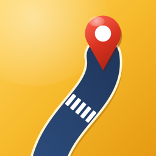

通学路チェック
家から学校までの道を調べて、踏切・信号のない横断歩道・車の多い道沿いなど、気をつけたい場所を地図と一覧にします。お子さんと一緒に確かめる「やくそく」つきです。
使い方
地図で調べる
- 「地図で調べる」を開き、出発（家や集合場所）と到着（学校）を選びます。名前で探すか、地図で場所を選べます。
- 「この道を調べる」を押すと、徒歩ルートに沿って気をつける場所を調べます。地図データの取得に1〜2分かかることがあります。
歩いて記録する
- 「歩いて記録する」で記録をはじめ、実際に通う道を歩きます。画面を消しても記録は続きます。
- 気になった場所は「ここ注意」で、メモや写真を残せます。
- 学校に着いたら記録を終えると、歩いた道を調べます。
結果の見方
- 要注意：踏切、信号のない横断歩道（大きな道）、横断歩道が見つからない場所で大きな道を渡るところ
- 注意：信号のない横断歩道、大きな交差点、車の多い道沿い、川・水路沿い、歩道橋、地下道、階段
- 安心・目印：信号のある横断歩道、交番、コンビニ、公園
それぞれの場所をタップすると、お子さんに伝える「やくそく」が表示されます。実際と違う場所は、一覧から外すことができます。地図を長押しすると、好きな場所にメモを追加できます。
2本目からの通学路の保存と、A4の通学路マップの印刷・共有は、アプリ内の「すべての機能を解放」で使えるようになります。
このアプリの結果は目安です。地図データにない横断歩道や信号、工事などもあります。必ずお子さんと実際に歩いて確かめてください。
よくある質問
「地図データを取得できませんでした」と出ます
地図データのサーバーが混み合っていることがあります。少し時間をおいて「もう一度調べる」を押してください。
実際にある横断歩道や信号が出てきません
地図データ（OpenStreetMap）に登録されていない場所は表示されません。地図を長押ししてメモとして追加できます。
地図アプリの徒歩ルートと、実際に通う道が違います
「歩いて記録する」で、実際の道を歩いて記録してください。
購入した機能が使えません
設定の「購入を復元」を押してください。購入したときと同じApple IDでサインインしている必要があります。
位置情報の許可を取り消してしまいました
iPhoneの「設定」アプリから、通学路チェックの位置情報を「このAppの使用中のみ許可」にしてください。
お問い合わせ
プライバシーポリシー
位置情報
「歩いて記録する」と、出発地点を「現在地」にするときに使います。記録した道は端末の中だけに保存し、開発者に送信することはありません。
地図データの取得
道のようすを調べるとき、通学路を囲む四角い範囲（緯度・経度）をOpenStreetMapのデータを配信するサーバー（Overpass API）に送り、その範囲の地図データを受け取ります。家や学校の名前、メモ、写真は送りません。経路の検索と地図の表示にはAppleのマップを使います。
カメラと写真
メモに写真を付けるときだけ使います。写真は端末の中だけに保存します。
集めている情報
個人情報、利用状況、端末情報を収集していません。アカウント登録、広告、分析ツールはありません。
端末に保存する情報
通学路、メモ、写真は端末の中だけに保存します。アプリを削除すると消えます。
購入
購入はApp Storeで行われ、支払いはAppleが処理します。開発者が支払い情報を受け取ることはありません。
地図データの出典
地図データ © OpenStreetMap contributors
変更
内容を変更する場合は、このページでお知らせします。
最終更新：2026年11月17日